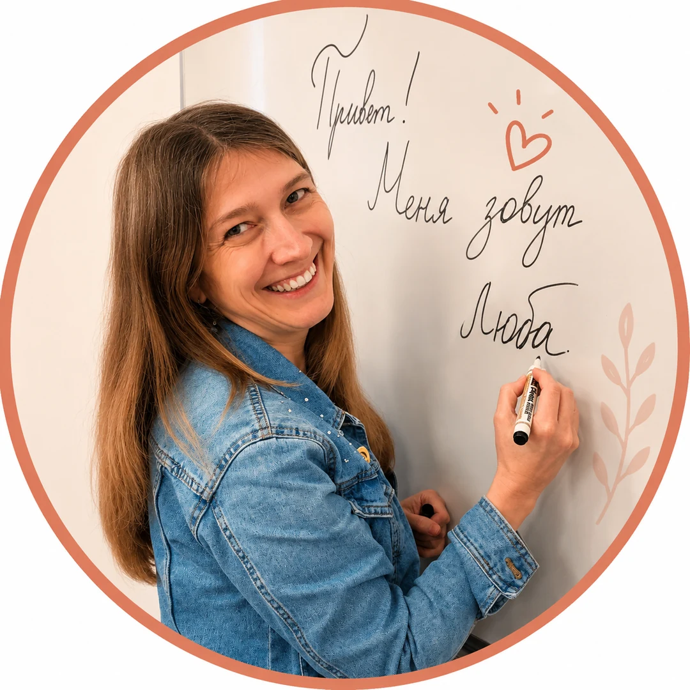

С нуля
Начните с основ и говорите по-русски уже на первом занятии.
Уроки русского с Любой
Я не просто преподаю русский. Я помогаю ученикам разобраться в сложной грамматике, преодолеть страх говорить и превратить полученные знания в живое общение.
Терпение, понятные объяснения и индивидуальный подход помогают вам обрести уверенность и двигаться вперёд в своём темпе.
Более 10 лет опыта · Занятия на английском и итальянском
Запросить бесплатный вводный звонокОтправьте запрос по email. Мы вместе подберём время; это ещё не подтверждённая запись.

Немного обо мне
Любовь к языку, искусству и разговорам, которые нас сближают.
Привет! Я Люба, преподаватель русского как иностранного, родом из Сибири. Сейчас я живу в Италии.
Я окончила Иркутский государственный педагогический университет и более 10 лет преподаю русский как иностранный — от начинающих с нуля до учеников продвинутого уровня.
Я постоянно развиваю свои преподавательские навыки на профессиональных курсах и международных семинарах. В числе моих квалификаций — курс по подготовке и организации экзаменов TORFL/ТРКИ, совместная программа университетов Пармы (Италия) и Санкт-Петербурга (Россия), а также Teaching Russian Online — курс повышения квалификации Университета Пармы.
Я также регулярно участвую в семинарах по современным методам преподавания и русскому как иностранному. В марте 2025 года я провела в Университете Пармы практический семинар по использованию искусственного интеллекта в преподавании русского языка.
Помимо преподавания, я увлекаюсь искусством, культурой и путешествиями. Я также окончила Академию изящных искусств в Болонье и с удовольствием привношу эти интересы в занятия.
Ваша отправная точка
Только начинаете или уже говорите по-русски? Я помогу вам сделать следующий шаг.
Начните с основ и говорите по-русски уже на первом занятии.
Укрепите знания грамматики, расширьте словарный запас и превратите знания в уверенное общение.
Развивайте беглость речи, выражайте сложные мысли и говорите естественнее.
Готовьтесь к экзамену с целевой практикой, эффективными стратегиями и чётким учебным планом.
Мой подход
Понимать · Практиковать · Говорить
Я считаю, что понимать язык так же важно, как и практиковать его. Поэтому мои занятия сочетают понятные объяснения грамматики, практические упражнения и живой разговор.
Каждое занятие адаптировано к вашему уровню, целям и интересам. Мы движемся в вашем темпе и сосредотачиваемся на том, что вам нужнее всего.
И самое главное — я создаю дружелюбную, поддерживающую атмосферу, в которой можно задавать вопросы, ошибаться и обретать уверенность без давления.
Занятия и цены
Хотите больше говорить, наконец разобраться в сложной грамматике или подготовиться к экзамену?
На индивидуальных занятиях всё подстраивается под вас: уровень, интересы, цели и темп обучения.
Вас ждут понятные объяснения, много разговорной практики и индивидуальная обратная связь в доброжелательной атмосфере.
Нравится учиться с другими? В небольших группах практика русского становится более интерактивной, общительной и доступной по цене.
Вы будете изучать грамматику и лексику, практиковать живое общение и выполнять задания с учениками похожего уровня.
В группе максимум 6 человек, поэтому у каждого есть время говорить, задавать вопросы и получать обратную связь.
Группы формируются по уровню. Если вы уже учили русский, мы оценим ваш уровень и подберём подходящую группу.
€225 с человека за полный курс: 10 занятий по 90 минут (всего 15 часов). €22,50 за занятие.
Днём: до 17:30 · Вечером: с 17:30
| Пакет | Днём | Вечером |
|---|---|---|
| 1 час · 1 занятие | €30 | €33 |
| 5 часов · 5 занятий | €140 | €155 |
| 10 часов · 10 занятий | €270 | €298 |
В мини-группе из 2 человек больше индивидуального внимания и есть партнёр для практики. Онлайн · Английский / Итальянский · 80 минут за занятие.
Днём: до 17:00 · Вечером: с 17:00
| Пакет | Днём | Вечером |
|---|---|---|
| 8 часов · 6 занятий | €160 | €176 |
| 20 часов · 15 занятий | €370 | €400 |
Всё время указано по Италии (Europe/Rome), с учётом перехода на летнее и зимнее время.
На вводном звонке обсудим формат, расписание и наличие мест в группах.
Запросить бесплатный вводный звонокКак всё устроено
Russ with Love
Фрагменты отзывов учеников, опубликованные с разрешения.
“Она очень организованный и терпеливый преподаватель, а её объяснения всегда предельно ясны. За короткое время я смогла понять и освоить темы, в которых раньше никак не могла разобраться.”
“Я учу русский с Любой уже год и с первого занятия чувствовала себя очень комфортно. Она невероятно терпеливая, понимающая и сразу помогает почувствовать себя непринуждённо — а это очень важно, когда говоришь на другом языке.”
“Её занятия и познавательны, и интересны, и я не могу не дать самую высокую оценку её преподавательскому мастерству.”
Начнём с разговора
Предпочитаете индивидуальное внимание или любите учиться с другими? Мы найдём формат, который подходит вашему уровню, целям и расписанию.
Расскажите немного о своём русском и о том, чего вы хотели бы достичь.
Начнём с бесплатного вводного звонка на 20–30 минут: познакомимся, поговорим о вашем опыте изучения русского и обсудим цели.
Я объясню, как проходят мои занятия, отвечу на вопросы и помогу выбрать подходящий формат обучения.
Если мы поймём, что подходим друг другу, назначим первый урок и начнём учить русский вместе!
Запросить свой бесплатный вводный звонокОтправьте запрос по email. Мы вместе подберём время; это ещё не подтверждённая запись.
Между занятиями
Я — соавтор Grammilla, приложения для изучения русского языка, родившегося из моего преподавательского опыта.
Оно объединяет понятные объяснения грамматики, интерактивные упражнения, лексику и аудио, чтобы вы могли понимать русский и заниматься самостоятельно.
От кириллицы до падежей и глаголов — Grammilla делает обучение доступнее, шаг за шагом.
Познакомиться с GrammillaДа. Занятия подходят как начинающим с нуля, так и ученикам среднего и продвинутого уровня.
Я преподаю русский с объяснениями на английском или итальянском.
Бесплатный звонок длится 20–30 минут. Обсудим ваш русский, цели и подходящий формат. Отправьте запрос по email — время согласуем вместе.
Да. Мы можем работать над целевыми заданиями, экзаменационными стратегиями и структурированным учебным планом.
Есть вопрос о занятиях? Напишите мне на email — буду рада помочь!
grammilla.academy@gmail.comПодписывайтесь на мои соцсети: советы по русскому, полезные выражения и знакомство с русской культурой.